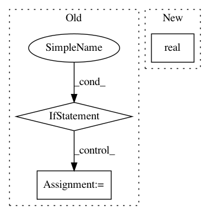

27bb4782e83efc7876f05b61a06e796012087b67,qucumber/utils/cplx.py,,scalar_divide,#Any#Any#,287
Before Change
:returns: x / y
:rtype: torch.Tensor
if len(list(x.size())) == 2 or len(list(x.size())) == 1:
y_star = torch.zeros_like(y)
y_star[0] = y[0]
y_star[1] = -y[1]
numerator = scalar_mult(y_star, x)
denominator = scalar_mult(y, y_star)[0]
if len(list(x.size())) == 3:
y_star = torch.zeros_like(y)
y_star[0] = y[0]
y_star[1] = -y[1]
After Change
y_star = conjugate(y)
numerator = scalar_mult(x, y_star)
denominator = real(scalar_mult(y, y_star))
return numerator / denominator
In pattern: SUPERPATTERN
Frequency: 3
Non-data size: 3
Instances
Project Name: PIQuIL/QuCumber
Commit Name: 27bb4782e83efc7876f05b61a06e796012087b67
Time: 2019-06-05
Author: emerali@users.noreply.github.com
File Name: qucumber/utils/cplx.py
Class Name:
Method Name: scalar_divide
Project Name: PIQuIL/QuCumber
Commit Name: db073909d05ae6f91b7abd8d6251bfa247349447
Time: 2019-12-31
Author: emerali@users.noreply.github.com
File Name: qucumber/utils/cplx.py
Class Name:
Method Name: conjugate
Project Name: tiberiu44/TTS-Cube
Commit Name: 2c6ce0ebfa9537246878e8fb9144e0c879fca17d
Time: 2018-10-22
Author: tibi@racai.ro
File Name: cube/models/vocoder.py
Class Name: BeeCoder
Method Name: _predict_one